lorenz_partial_additive_splitmode_p30_obsnoise005_cayley_autodim_chain__ndelays_5_100_sweepProject: Lorenz_INDpartial_NDsweep_cayley_autodim_D1_NormTrue__JacobianODE
Launched: 2026-05-02T19:50:17Z
Completed: 2026-05-03T01:35:24Z
Outcome: complete_clean
Git: latent-JacobianODE @ 41023f1
Expected runs: 20
lorenz_partial_additive_splitmode_p30_obsnoise005_cayley_autodim_chain__ndelays_5_100_sweepDescription
Lorenz partial additive coupling, PCA-99 autodim + split-mode +
Cayley + near-identity init + TF-coupled LR. Single observed channel
(idx 0), obs_noise=0.05, prediction_steps=30, traj_init_steps=15.
Sweeps delay_embedding_params.n_delays over [5, 10, ..., 100] (20
cells). n_target_dims is auto-picked per cell from the noisy training
delay-embeddings via PCA-99; encoder.n_input is auto-resolved from
n_delays at Hydra runtime.
On reap, the chain dispatches the top-3 n_delays into the Cayley LC
× obs_noise grid sweep ..._cayley_autodim_top3nd__lc_obsnoisescale_sweep.
Hypothesis
With the standard Cayley + autodim + split-mode recipe, the n_delays optimum may shift vs the prior non-Cayley non-autodim scout (which fixed n_target_dims=3 and used random permutations). Identity-start + Cayley should give a cleaner curve over n_delays since the encoder no longer has random-permutation slop fighting against the dynamics MLP. PCA-99 lets the latent dim grow with the embedding dim where needed.
Success criteria
Swept axes (22): data.train_test_params.delay_embedding_params.n_delays, model.encoder.n_input, model.n_target_dims, model.n_target_dims_pca_auto, model.n_target_dims_pca_cum_var, model.params.input_dim, model.params.output_dim, training.lightning.cosine_T_max, training.lightning.diffeomorphism_weight, training.lightning.latent_noise_per_step, training.lightning.latent_noise_scale, training.lightning.learn_fnn_weight, training.lightning.learn_jac_cons_weight, training.lightning.learn_jac_norm_weight, training.lightning.learn_loop_closure_weight, training.lightning.learn_r2_weight, training.lightning.log_var_init, training.lightning.loop_closure_int_method, training.lightning.precompute_latent_noise_factor, training.lightning.tangent_entropy_mode, training.lightning.tangent_entropy_n_samples, training.lightning.tangent_entropy_weight
Chosen run (by best_traj_loss): 6pt0eef4 — traj_loss=0.00514, MASE=0.7603, R²=0.9866, LC loss=30.974, epoch=107.0
Swept-axis values at chosen run: data.train_test_params.delay_embedding_params.n_delays=85 · model.encoder.n_input=85 · model.n_target_dims=14 · model.n_target_dims_pca_auto=14 · model.n_target_dims_pca_cum_var=0.990074 · model.params.input_dim=14 · model.params.output_dim=196 · training.lightning.cosine_T_max=100 · training.lightning.diffeomorphism_weight=0 · training.lightning.latent_noise_per_step=False · training.lightning.latent_noise_scale=0 · training.lightning.learn_fnn_weight=False · training.lightning.learn_jac_cons_weight=False · training.lightning.learn_jac_norm_weight=False · training.lightning.learn_loop_closure_weight=False · training.lightning.learn_r2_weight=False · training.lightning.log_var_init=auto · training.lightning.loop_closure_int_method=Trapezoid · training.lightning.precompute_latent_noise_factor=True · training.lightning.tangent_entropy_mode=quadratic · training.lightning.tangent_entropy_n_samples=256 · training.lightning.tangent_entropy_weight=0
Runs analyzed: 20 (expected 20)
| run_idx | run_id | data.train_test_params.delay_embedding_params.n_delays |
model.encoder.n_input |
model.n_target_dims |
model.n_target_dims_pca_auto |
model.n_target_dims_pca_cum_var |
model.params.input_dim |
model.params.output_dim |
training.lightning.cosine_T_max |
training.lightning.diffeomorphism_weight |
training.lightning.latent_noise_per_step |
training.lightning.latent_noise_scale |
training.lightning.learn_fnn_weight |
training.lightning.learn_jac_cons_weight |
training.lightning.learn_jac_norm_weight |
training.lightning.learn_loop_closure_weight |
training.lightning.learn_r2_weight |
training.lightning.log_var_init |
training.lightning.loop_closure_int_method |
training.lightning.precompute_latent_noise_factor |
training.lightning.tangent_entropy_mode |
training.lightning.tangent_entropy_n_samples |
training.lightning.tangent_entropy_weight |
best_traj_loss | best_MASE | R² | LC loss | epoch |
|---|---|---|---|---|---|---|---|---|---|---|---|---|---|---|---|---|---|---|---|---|---|---|---|---|---|---|---|---|
| 16 | 6pt0eef4 |
85 | 85 | 14 | 14 | 0.990074 | 14 | 196 | 100 | 0 | False | 0 | False | False | False | False | False | auto | Trapezoid | True | quadratic | 256 | 0 | 0.00514 | 0.7603 | 0.9866 | 30.974 | 107.0 |
| 12 | z6rq7a88 |
65 | 65 | 11 | 11 | 0.990219 | 11 | 121 | 100 | 0 | False | 0 | False | False | False | False | False | auto | Trapezoid | True | quadratic | 256 | 0 | 0.00537 | 0.7667 | 0.9857 | 19.869 | 109.0 |
| 14 | 4a0qqu1o |
75 | 75 | 12 | 12 | 0.990036 | 12 | 144 | 100 | 0 | False | 0 | False | False | False | False | False | auto | Trapezoid | True | quadratic | 256 | 0 | 0.00570 | 0.7839 | 0.9846 | 23.872 | 72.0 |
| 17 | 3cwrrjbb |
90 | 90 | 15 | 15 | 0.990087 | 15 | 225 | 100 | 0 | False | 0 | False | False | False | False | False | auto | Trapezoid | True | quadratic | 256 | 0 | 0.00572 | 0.7846 | 0.9847 | 22.492 | 108.0 |
| 10 | o0fzjaqg |
55 | 55 | 9 | 9 | 0.990192 | 9 | 81 | 100 | 0 | False | 0 | False | False | False | False | False | auto | Trapezoid | True | quadratic | 256 | 0 | 0.00574 | 0.7868 | 0.9847 | 35.921 | 114.0 |
| 19 | b6rqlpix |
100 | 100 | 17 | 17 | 0.990106 | 17 | 289 | 100 | 0 | False | 0 | False | False | False | False | False | auto | Trapezoid | True | quadratic | 256 | 0 | 0.00585 | 0.7914 | 0.9843 | 19.076 | 103.0 |
| 11 | 01ngc7hg |
60 | 60 | 10 | 10 | 0.990208 | 10 | 100 | 100 | 0 | False | 0 | False | False | False | False | False | auto | Trapezoid | True | quadratic | 256 | 0 | 0.00599 | 0.7923 | 0.9839 | 22.288 | 108.0 |
| 5 | j0xl13ov |
30 | 30 | 5 | 5 | 0.990271 | 5 | 25 | 100 | 0 | False | 0 | False | False | False | False | False | auto | Trapezoid | True | quadratic | 256 | 0 | 0.00628 | 0.8104 | 0.9833 | 26.403 | 103.0 |
| 15 | 7cd0v85y |
80 | 80 | 13 | 13 | 0.990058 | 13 | 169 | 100 | 0 | False | 0 | False | False | False | False | False | auto | Trapezoid | True | quadratic | 256 | 0 | 0.00639 | 0.7958 | 0.9830 | 21.745 | 105.0 |
| 7 | 2g14oxfz |
40 | 40 | 7 | 7 | 0.990472 | 7 | 49 | 100 | 0 | False | 0 | False | False | False | False | False | auto | Trapezoid | True | quadratic | 256 | 0 | 0.00647 | 0.7993 | 0.9828 | 14.463 | 90.0 |
| 6 | l8eqint7 |
35 | 35 | 6 | 6 | 0.990408 | 6 | 36 | 100 | 0 | False | 0 | False | False | False | False | False | auto | Trapezoid | True | quadratic | 256 | 0 | 0.00653 | 0.7997 | 0.9828 | 12.577 | 108.0 |
| 8 | dvd4m4j6 |
45 | 45 | 7 | 7 | 0.990085 | 7 | 49 | 100 | 0 | False | 0 | False | False | False | False | False | auto | Trapezoid | True | quadratic | 256 | 0 | 0.00684 | 0.8164 | 0.9807 | 10.715 | 41.0 |
| 9 | 00uwjk1l |
50 | 50 | 8 | 8 | 0.990154 | 8 | 64 | 100 | 0 | False | 0 | False | False | False | False | False | auto | Trapezoid | True | quadratic | 256 | 0 | 0.00717 | 0.8150 | 0.9806 | 30.240 | 74.0 |
| 13 | yv4qyo8g |
70 | 70 | 11 | 11 | 0.990007 | 11 | 121 | 100 | 0 | False | 0 | False | False | False | False | False | auto | Trapezoid | True | quadratic | 256 | 0 | 0.00773 | 0.8025 | 0.9795 | 30.263 | 70.0 |
| 18 | 4dg41gx9 |
95 | 95 | 16 | 16 | 0.990098 | 16 | 256 | 100 | 0 | False | 0 | False | False | False | False | False | auto | Trapezoid | True | quadratic | 256 | 0 | 0.00830 | 0.8565 | 0.9776 | 18.250 | 47.0 |
| 4 | agayvyh6 |
25 | 25 | 5 | 5 | 0.990796 | 5 | 25 | 100 | 0 | False | 0 | False | False | False | False | False | auto | Trapezoid | True | quadratic | 256 | 0 | 0.00971 | 0.8971 | 0.9744 | 7.508 | 109.0 |
| 3 | dlnfq59a |
20 | 20 | 4 | 4 | 0.990715 | 4 | 16 | None | None | None | None | None | None | None | None | None | None | None | None | None | None | None | 0.01155 | 0.9457 | 0.9688 | 12.392 | 126.0 |
| 2 | 0kq9y1x2 |
15 | 15 | 3 | 3 | 0.990585 | 3 | 9 | None | None | None | None | None | None | None | None | None | None | None | None | None | None | None | 0.02247 | 1.1464 | 0.9406 | 0.512 | 93.0 |
| 1 | kgcwcd7m |
10 | 10 | 3 | 3 | 0.991956 | 3 | 9 | 100 | 0 | False | 0 | False | False | False | False | False | auto | Trapezoid | True | quadratic | 256 | 0 | 0.02472 | 1.3354 | 0.9343 | 0.275 | 89.0 |
| 0 | imwiz3cy |
5 | 5 | 2 | 2 | 0.993071 | 2 | 4 | 100 | 0 | False | 0 | False | False | False | False | False | auto | Trapezoid | True | quadratic | 256 | 0 | 0.06177 | 2.2958 | 0.8371 | 0.224 | 151.0 |
| Criterion | Verdict | Note |
|---|---|---|
| All 20 cells train without divergence | Unknown | |
| Per-cell autodim n_target_dims logged (expect growth with n_delays) | Unknown | |
| Best traj_loss is monotone-or-curve in n_delays (no random scatter) | Unknown | |
| On reap, controller logs '[chain ...] axis_select OK' and grid instruction lands in instructions/pending/ | Unknown |
Automated verdicts use simple numeric-threshold parsing and may mis-classify qualitative criteria. The Discussion section below takes precedence.
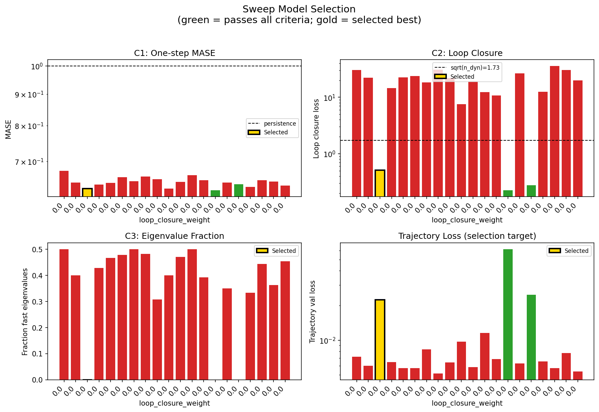
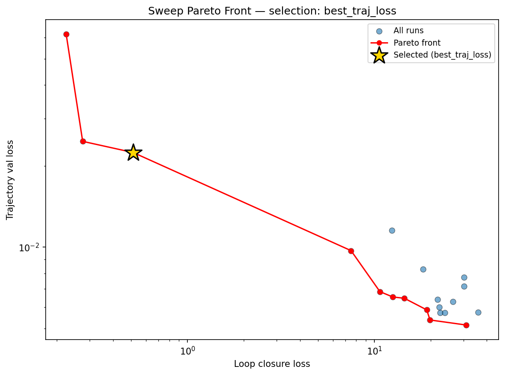
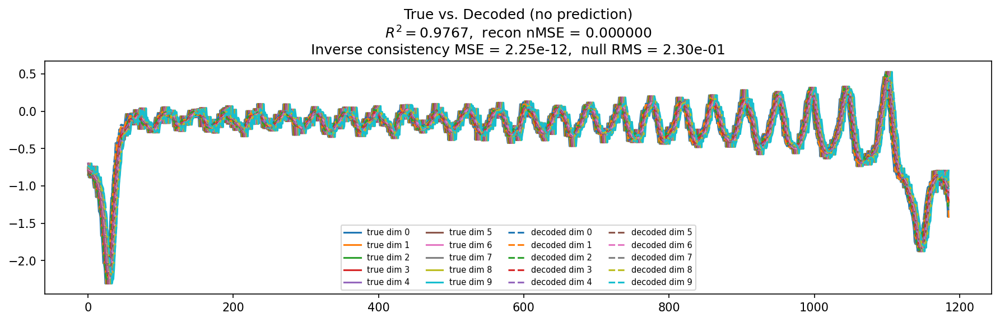
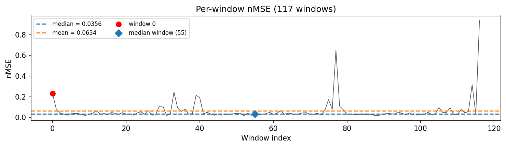
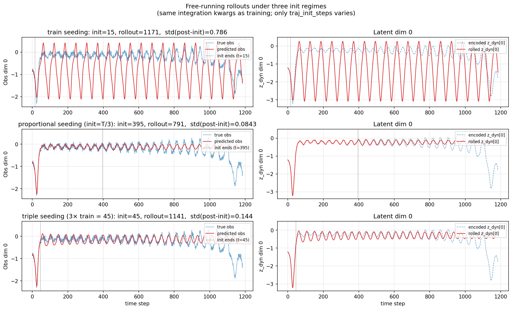
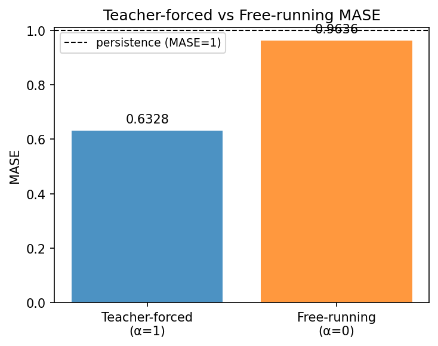
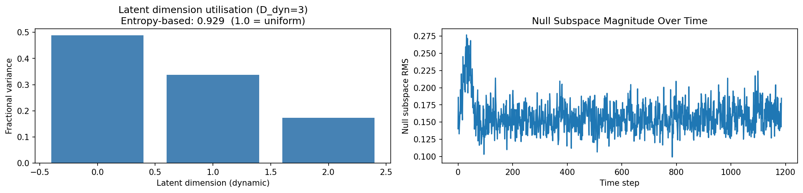
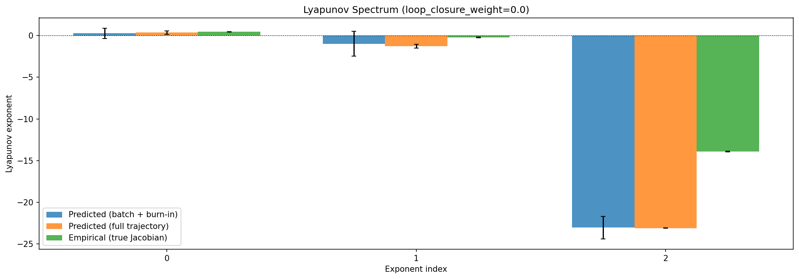
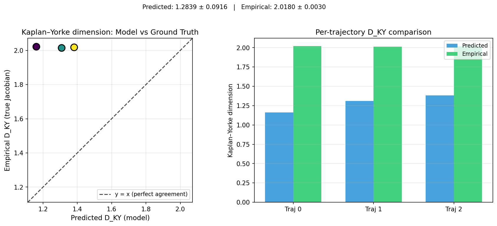
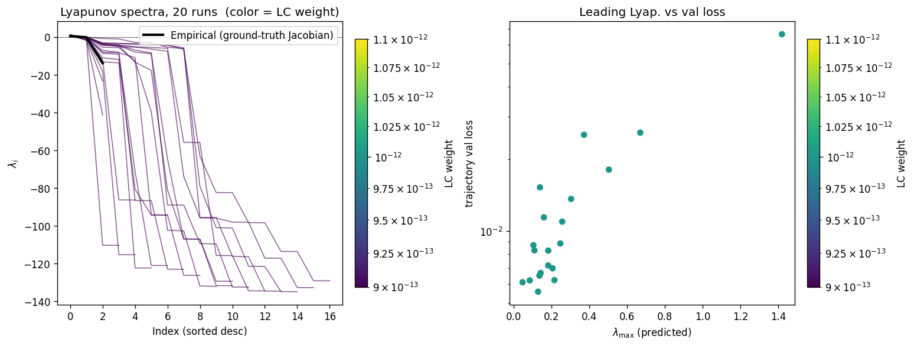
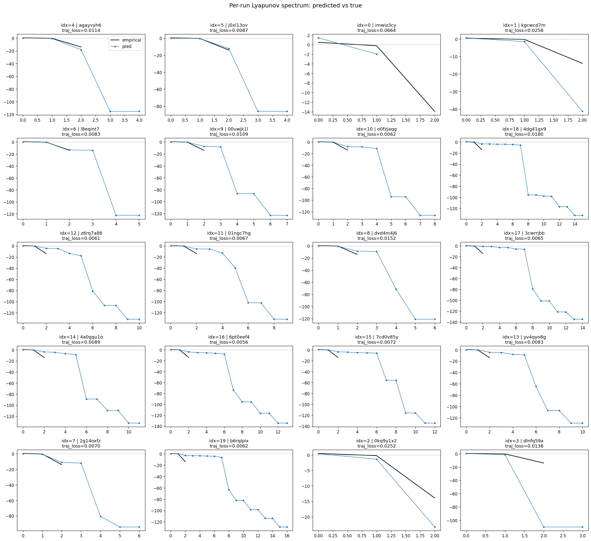
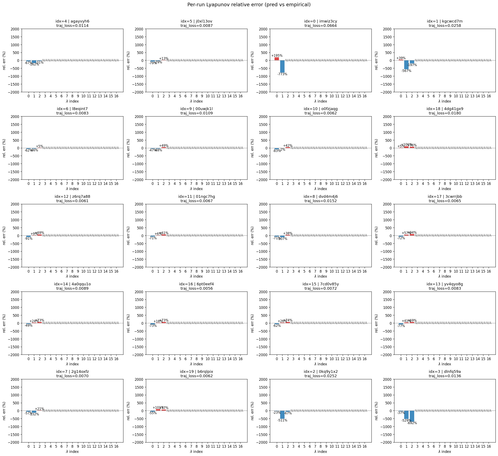
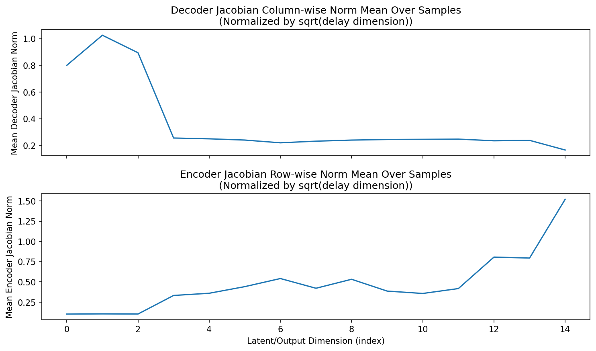
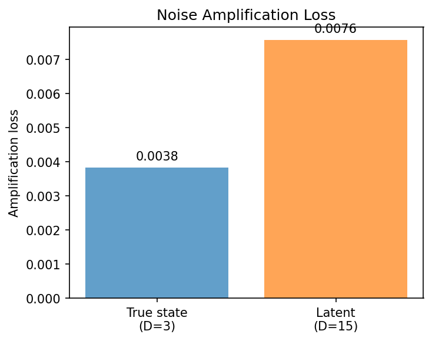
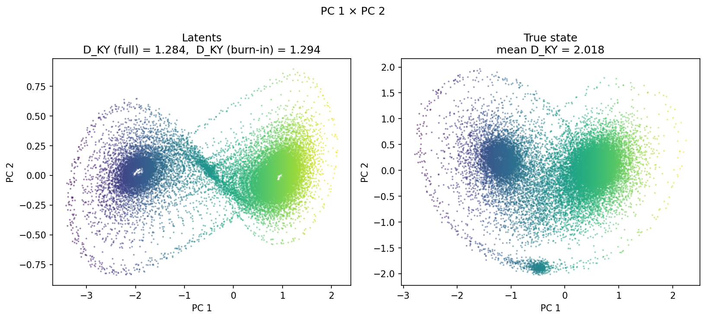
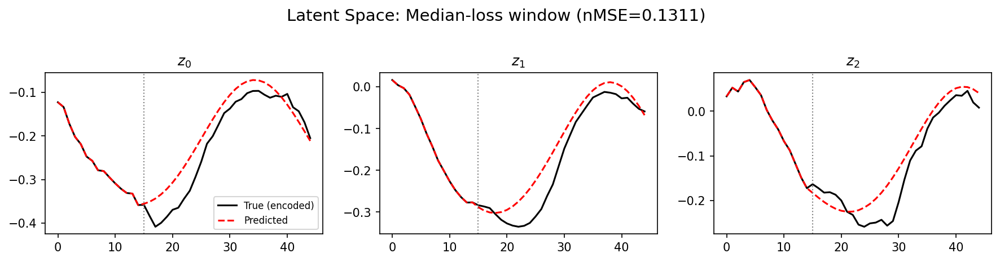
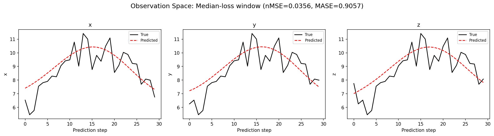
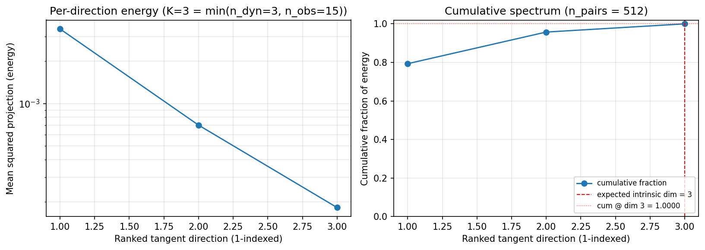
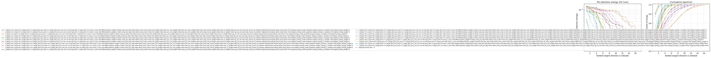
(to be written)
run_analytics stdoutrun_analyticsNo run_id provided — selecting best run from group 'lorenz_partial_additive_splitmode_p30_obsnoise005_cayley_autodim_chain__ndelays_5_100_sweep' ...
Found 20 total runs in JacobianODE/Lorenz_INDpartial_NDsweep_cayley_autodim_D1_NormTrue__JacobianODE (group=lorenz_partial_additive_splitmode_p30_obsnoise005_cayley_autodim_chain__ndelays_5_100_sweep)
All runs (state, loop_closure_weight, tangent_entropy_weight, kl_dyn_weight):
agayvyh6: state=crashed, lc=0.0, te=0.0, kl_dyn=0.0
j0xl13ov: state=crashed, lc=0.0, te=0.0, kl_dyn=0.0
imwiz3cy: state=crashed, lc=0.0, te=0.0, kl_dyn=0.0
kgcwcd7m: state=finished, lc=0.0, te=0.0, kl_dyn=0.0
l8eqint7: state=crashed, lc=0.0, te=0.0, kl_dyn=0.0
00uwjk1l: state=finished, lc=0.0, te=0.0, kl_dyn=0.0
o0fzjaqg: state=crashed, lc=0.0, te=0.0, kl_dyn=0.0
4dg41gx9: state=finished, lc=0.0, te=0.0, kl_dyn=0.0
z6rq7a88: state=crashed, lc=0.0, te=0.0, kl_dyn=0.0
01ngc7hg: state=crashed, lc=0.0, te=0.0, kl_dyn=0.0
dvd4m4j6: state=finished, lc=0.0, te=0.0, kl_dyn=0.0
3cwrrjbb: state=crashed, lc=0.0, te=0.0, kl_dyn=0.0
4a0qqu1o: state=finished, lc=0.0, te=0.0, kl_dyn=0.0
6pt0eef4: state=crashed, lc=0.0, te=0.0, kl_dyn=0.0
7cd0v85y: state=crashed, lc=0.0, te=0.0, kl_dyn=0.0
yv4qyo8g: state=crashed, lc=0.0, te=0.0, kl_dyn=0.0
2g14oxfz: state=crashed, lc=0.0, te=0.0, kl_dyn=0.0
b6rqlpix: state=crashed, lc=0.0, te=0.0, kl_dyn=0.0
0kq9y1x2: state=finished, lc=0.0, te=0.0, kl_dyn=0.0
dlnfq59a: state=running, lc=0.0, te=0.0, kl_dyn=0.0
slurm_timeout_min not found in any run config — falling back to 180 min
Including agayvyh6 (lc=0.0): use_all_runs=True (state=crashed)
Including j0xl13ov (lc=0.0): use_all_runs=True (state=crashed)
Including imwiz3cy (lc=0.0): use_all_runs=True (state=crashed)
Including kgcwcd7m (lc=0.0): use_all_runs=True (state=finished)
Including l8eqint7 (lc=0.0): use_all_runs=True (state=crashed)
Including 00uwjk1l (lc=0.0): use_all_runs=True (state=finished)
Including o0fzjaqg (lc=0.0): use_all_runs=True (state=crashed)
Including 4dg41gx9 (lc=0.0): use_all_runs=True (state=finished)
Including z6rq7a88 (lc=0.0): use_all_runs=True (state=crashed)
Including 01ngc7hg (lc=0.0): use_all_runs=True (state=crashed)
Including dvd4m4j6 (lc=0.0): use_all_runs=True (state=finished)
Including 3cwrrjbb (lc=0.0): use_all_runs=True (state=crashed)
Including 4a0qqu1o (lc=0.0): use_all_runs=True (state=finished)
Including 6pt0eef4 (lc=0.0): use_all_runs=True (state=crashed)
Including 7cd0v85y (lc=0.0): use_all_runs=True (state=crashed)
Including yv4qyo8g (lc=0.0): use_all_runs=True (state=crashed)
Including 2g14oxfz (lc=0.0): use_all_runs=True (state=crashed)
Including b6rqlpix (lc=0.0): use_all_runs=True (state=crashed)
Including 0kq9y1x2 (lc=0.0): use_all_runs=True (state=finished)
Including dlnfq59a (lc=0.0): use_all_runs=True (state=running)
Found 20 effectively-done sweep runs:
loop_closure_weight=0.0, tangent_entropy_weight=0.0, kl_dyn_weight=0.0 -> run_id=00uwjk1l
loop_closure_weight=0.0, tangent_entropy_weight=0.0, kl_dyn_weight=0.0 -> run_id=01ngc7hg
loop_closure_weight=0.0, tangent_entropy_weight=0.0, kl_dyn_weight=0.0 -> run_id=0kq9y1x2
loop_closure_weight=0.0, tangent_entropy_weight=0.0, kl_dyn_weight=0.0 -> run_id=2g14oxfz
loop_closure_weight=0.0, tangent_entropy_weight=0.0, kl_dyn_weight=0.0 -> run_id=3cwrrjbb
loop_closure_weight=0.0, tangent_entropy_weight=0.0, kl_dyn_weight=0.0 -> run_id=4a0qqu1o
loop_closure_weight=0.0, tangent_entropy_weight=0.0, kl_dyn_weight=0.0 -> run_id=4dg41gx9
loop_closure_weight=0.0, tangent_entropy_weight=0.0, kl_dyn_weight=0.0 -> run_id=6pt0eef4
loop_closure_weight=0.0, tangent_entropy_weight=0.0, kl_dyn_weight=0.0 -> run_id=7cd0v85y
loop_closure_weight=0.0, tangent_entropy_weight=0.0, kl_dyn_weight=0.0 -> run_id=agayvyh6
loop_closure_weight=0.0, tangent_entropy_weight=0.0, kl_dyn_weight=0.0 -> run_id=b6rqlpix
loop_closure_weight=0.0, tangent_entropy_weight=0.0, kl_dyn_weight=0.0 -> run_id=dlnfq59a
loop_closure_weight=0.0, tangent_entropy_weight=0.0, kl_dyn_weight=0.0 -> run_id=dvd4m4j6
loop_closure_weight=0.0, tangent_entropy_weight=0.0, kl_dyn_weight=0.0 -> run_id=imwiz3cy
loop_closure_weight=0.0, tangent_entropy_weight=0.0, kl_dyn_weight=0.0 -> run_id=j0xl13ov
loop_closure_weight=0.0, tangent_entropy_weight=0.0, kl_dyn_weight=0.0 -> run_id=kgcwcd7m
loop_closure_weight=0.0, tangent_entropy_weight=0.0, kl_dyn_weight=0.0 -> run_id=l8eqint7
loop_closure_weight=0.0, tangent_entropy_weight=0.0, kl_dyn_weight=0.0 -> run_id=o0fzjaqg
loop_closure_weight=0.0, tangent_entropy_weight=0.0, kl_dyn_weight=0.0 -> run_id=yv4qyo8g
loop_closure_weight=0.0, tangent_entropy_weight=0.0, kl_dyn_weight=0.0 -> run_id=z6rq7a88
n_dims=50, n_latent=50, n_dyn=8, dt=0.0150
run=00uwjk1l: DiagnosticMetrics(one_step_mase=0.6754624247550964, loop_closure_loss=30.240192413330078, fast_eigenvalue_fraction=0.5, trajectory_val_loss=0.007172144018113613) (from W&B history)
run=01ngc7hg: DiagnosticMetrics(one_step_mase=0.6466826796531677, loop_closure_loss=22.28786849975586, fast_eigenvalue_fraction=0.4000000059604645, trajectory_val_loss=0.005989021621644497) (from W&B history)
run=0kq9y1x2: DiagnosticMetrics(one_step_mase=0.6322402954101562, loop_closure_loss=0.5119985938072205, fast_eigenvalue_fraction=0.0, trajectory_val_loss=0.02247111313045025) (from W&B history)
run=2g14oxfz: DiagnosticMetrics(one_step_mase=0.6418149471282959, loop_closure_loss=14.462990760803223, fast_eigenvalue_fraction=0.4285714328289032, trajectory_val_loss=0.006465525832027197) (from W&B history)
run=3cwrrjbb: DiagnosticMetrics(one_step_mase=0.6461144685745239, loop_closure_loss=22.491716384887695, fast_eigenvalue_fraction=0.46666666865348816, trajectory_val_loss=0.0057178218849003315) (from W&B history)
run=4a0qqu1o: DiagnosticMetrics(one_step_mase=0.6601777076721191, loop_closure_loss=23.872220993041992, fast_eigenvalue_fraction=0.4791666567325592, trajectory_val_loss=0.005702839698642492) (from W&B history)
run=4dg41gx9: DiagnosticMetrics(one_step_mase=0.6501593589782715, loop_closure_loss=18.249780654907227, fast_eigenvalue_fraction=0.5, trajectory_val_loss=0.00830024853348732) (from W&B history)
run=6pt0eef4: DiagnosticMetrics(one_step_mase=0.6616532802581787, loop_closure_loss=30.973756790161133, fast_eigenvalue_fraction=0.4821428656578064, trajectory_val_loss=0.005142477806657553) (from W&B history)
run=7cd0v85y: DiagnosticMetrics(one_step_mase=0.655305027961731, loop_closure_loss=21.744522094726562, fast_eigenvalue_fraction=0.3076923191547394, trajectory_val_loss=0.006391320843249559) (from W&B history)
run=agayvyh6: DiagnosticMetrics(one_step_mase=0.6323376893997192, loop_closure_loss=7.5076093673706055, fast_eigenvalue_fraction=0.4000000059604645, trajectory_val_loss=0.009711140766739845) (from W&B history)
run=b6rqlpix: DiagnosticMetrics(one_step_mase=0.6486927270889282, loop_closure_loss=19.075916290283203, fast_eigenvalue_fraction=0.47058823704719543, trajectory_val_loss=0.00585276260972023) (from W&B history)
run=dlnfq59a: DiagnosticMetrics(one_step_mase=0.6651644110679626, loop_closure_loss=12.391884803771973, fast_eigenvalue_fraction=0.5, trajectory_val_loss=0.011546650901436806) (from W&B history)
run=dvd4m4j6: DiagnosticMetrics(one_step_mase=0.6522124409675598, loop_closure_loss=10.714605331420898, fast_eigenvalue_fraction=0.3928571343421936, trajectory_val_loss=0.006839513313025236) (from W&B history)
run=imwiz3cy: DiagnosticMetrics(one_step_mase=0.6283477544784546, loop_closure_loss=0.2242143303155899, fast_eigenvalue_fraction=0.0, trajectory_val_loss=0.0617748387157917) (from W&B history)
run=j0xl13ov: DiagnosticMetrics(one_step_mase=0.6471287608146667, loop_closure_loss=26.403085708618164, fast_eigenvalue_fraction=0.3499999940395355, trajectory_val_loss=0.006280282512307167) (from W&B history)
run=kgcwcd7m: DiagnosticMetrics(one_step_mase=0.6431223154067993, loop_closure_loss=0.27470678091049194, fast_eigenvalue_fraction=0.0, trajectory_val_loss=0.024723567068576813) (from W&B history)
run=l8eqint7: DiagnosticMetrics(one_step_mase=0.636674702167511, loop_closure_loss=12.576972961425781, fast_eigenvalue_fraction=0.3333333432674408, trajectory_val_loss=0.006532621569931507) (from W&B history)
run=o0fzjaqg: DiagnosticMetrics(one_step_mase=0.6528958678245544, loop_closure_loss=35.92095184326172, fast_eigenvalue_fraction=0.4444444477558136, trajectory_val_loss=0.005740104243159294) (from W&B history)
run=yv4qyo8g: DiagnosticMetrics(one_step_mase=0.64963698387146, loop_closure_loss=30.262615203857422, fast_eigenvalue_fraction=0.3636363744735718, trajectory_val_loss=0.00772519176825881) (from W&B history)
run=z6rq7a88: DiagnosticMetrics(one_step_mase=0.6396624445915222, loop_closure_loss=19.86850929260254, fast_eigenvalue_fraction=0.4545454680919647, trajectory_val_loss=0.005368427839130163) (from W&B history)
Ranking method: best_traj_loss
Best run ID: 0kq9y1x2
Best loop_closure_weight: 0.0
Best tangent_entropy_weight: 0.0
Best kl_dyn_weight: 0.0
Best traj loss: 0.022471
Criteria applied: ['C1', 'C2', 'C3']
Surviving: 3 / 20
Auto-selected run_id: 0kq9y1x2
======================================================================
PARETO FRONTIER RUNS (10 runs)
======================================================================
Run ID LC Loss Traj Val Loss
------------ -------------- --------------
imwiz3cy 0.224214 0.061775
kgcwcd7m 0.274707 0.024724
0kq9y1x2 0.511999 0.022471 <-- selected
agayvyh6 7.507609 0.009711
dvd4m4j6 10.714605 0.006840
l8eqint7 12.576973 0.006533
2g14oxfz 14.462991 0.006466
b6rqlpix 19.075916 0.005853
z6rq7a88 19.868509 0.005368
6pt0eef4 30.973757 0.005142
======================================================================
RANKING METHOD COMPARISON (over 3 survivors)
======================================================================
Method Run ID LC Loss Traj Val Loss
---------------------- ------------ -------------- --------------
best_traj_loss 0kq9y1x2 0.511999 0.022471 <-- active
pareto_knee kgcwcd7m 0.274707 0.024724
geo_rank 0kq9y1x2 0.511999 0.022471
minimax_rank kgcwcd7m 0.274707 0.024724
geo_log_score 0kq9y1x2 0.511999 0.022471
minimax_log_score kgcwcd7m 0.274707 0.024724
======================================================================
Loading run 0kq9y1x2 from JacobianODE/Lorenz_INDpartial_NDsweep_cayley_autodim_D1_NormTrue__JacobianODE ...
Loading checkpoint epoch=93-step=18800.ckpt...
Train dataset shape: torch.Size([25102, 45, 15])
Validation dataset shape: torch.Size([7987, 45, 15])
Test dataset shape: torch.Size([3423, 45, 15])
Train trajectories dataset shape: torch.Size([22, 1186, 15])
Validation trajectories dataset shape: torch.Size([7, 1186, 15])
Test trajectories dataset shape: torch.Size([3, 1186, 15])
Loading checkpoint epoch=93-step=18800.ckpt...
Computing reconstruction ...
Computing MASE ...
Teacher-forced MASE: 0.6328
Free-running MASE: 0.9636
Computing latent utilization ...
Entropy-based utilization: 0.929
Null subspace mean RMS: 1.597451e-01
Computing Lyapunov exponents ...
Computing full-trajectory Lyapunov (3 test trajs, T=1186) ...
Predicted Lyapunov exponents (batch+burn-in, 128 windowed trajs):
λ_1 = +0.2751 ± 0.6134
λ_2 = -0.9826 ± 1.4936
λ_3 = -23.0646 ± 1.3321
Predicted Lyapunov exponents (full-length, 3 test trajs):
λ_1 = +0.3777 ± 0.1998
λ_2 = -1.2736 ± 0.2190
λ_3 = -23.1209 ± 0.0195
Empirical Lyapunov exponents (mean ± std):
λ_1 = +0.4677 ± 0.0259
λ_2 = -0.2173 ± 0.0549
λ_3 = -13.9174 ± 0.0513
Mean KY dim (predicted): 1.284 ± 0.092
Mean KY dim (empirical): 2.018 ± 0.003
Mean KY dim (burn-in): 1.294 ± 0.761
Computing prediction windows ...
Windows: 117 — nMSE min=0.0172, median=0.0356, mean=0.0634, max=0.9358
Computing long-trajectory free-running rollouts ...
Computing encoder/decoder Jacobians ...
encoder_jacobian: (128, 15, 15)
decoder_jacobian: (128, 15, 15)
Computing amplification loss ...
Amplification loss — True state: 0.003832
Amplification loss — Latent: 0.007571
Computing tangent space spectrum ...